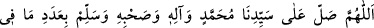
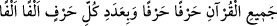
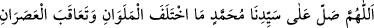
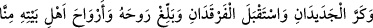
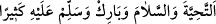

sürekli bu çeşit salevât göndermelidir ki şeytanların şerrinden ve onların
vesveselerinden emin ve korunmuş olsun.”
“(Allâh’ım, efendimiz Muhammed’e, O’nun âilesine ve ashabına, harf harf
Kur’an’da bulunanlar sayısınca ve her bir harfe biner biner olmak üzere onların
sayısınca salât ve selâm eyle.)”
Hâfızlar Kur’ân’dan hizblerini tilâvet ettikten sonra bu salevâtı okurlarsa hem
dünyâda hem âhirette bunun bereketini görürler. Hem sûret hem mânâ bakımından maddî
ve mânevî olarak faydasını görürler.
“(Gece ve gündüz yer değiştirdikçe, sabah ve akşam birbiri ardından geldikçe, iki
yeni (gece ve gündüz) tekrar tekrar geri geldikçe, iki kutup yıldızı yüzünü gösterdikçe
efendimiz Muhammed (s.a.)’e salât eyle. O’nun rûhuna, ehl-i beytinin rûhuna bizden
tahiyyet ve selam ulaştır. O’na çok bereket ihsân et ve selam eyle.)”
Rivâyet edilir ki birisi Sultan Gâzî Mahmûd Gaznevî’nin yanına gitti ve şöyle dedi:
“Bir süredir Hz. Peygamber (a.s.)’i rüyâda görmek ve gönlümde olan keder ve sıkıntıyı,
O gam ortağı sevgiliye açıklamak istiyordum. Her gece uykuda bilerek gözümü
açmıyordum, ola ki rüyamda devlete uyanık ulaşırım diye. Kazârâ saâdet yüz gösterdi;
dün gece o devlete uyanık erdim. Cana can katan ve âlemi süsleyen; ayın on dördü
gecesinin dolunayı ve kadir gecesinin Ruh’u gibi olan O mübarek yüzü gördüm. O yüce
Peygamber’i neşeli görünce: “Ey Allâh’ın Rasûlü! Bin dirhem borcum var ve ödemeye
gücüm yok. Korkarım ki ecel gelir de o borcun yükü boynumda kalır.” dedim.
Hz. Peygamber (a.s.): “Mahmûd Sebüktekin’in yanına git ve bu miktar parayı ondan
al.” buyurdu. “Ey insanlığın Efendisi! Belki bana inanmaz, benden bir alâmet ister.”
dedim. Hz. Peygamber: “Gecenin evvelinde uykuya varacağında bana otuz bin defa
salevât gönderiyorsun. Gecenin sonunda uyandığında da otuz bin salevât
gönderiyorsun.” buyuruyor. İşte nişan budur, benim borcumu öde” de.” buyurdu.
Sultan Mahmud bunu duyunca ağlamaya başladı. Onu doğruladı, borcunu ödedi ve bin
dirhem daha verdi. Devlet erkânı bu duruma şaşırdılar ve: “Sultanımız! Böyle
olmayacak bir söz söyleyen adamı tasdik ettiniz. Halbuki gecenin başında ve sonunda
biz seninleyiz. Salevâtla meşgul olduğunu da görmüyoruz. Eğer bir kimse salevât
getirmekle meşgul olsa, ne kadar gayret etse de bütün gün ve gece altmış bin salevât